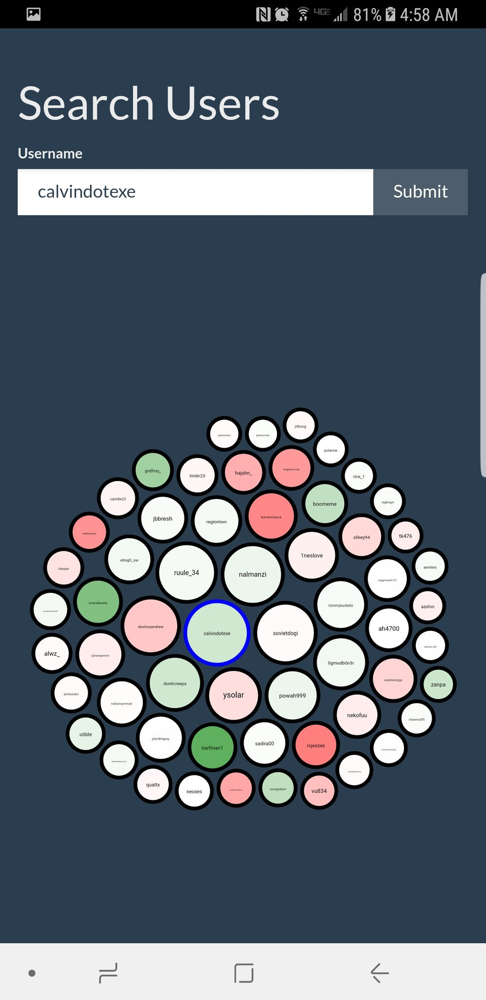
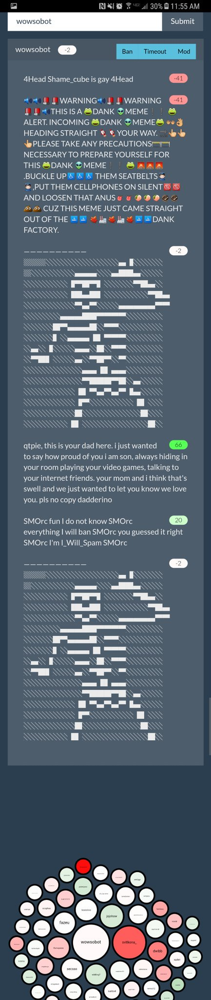
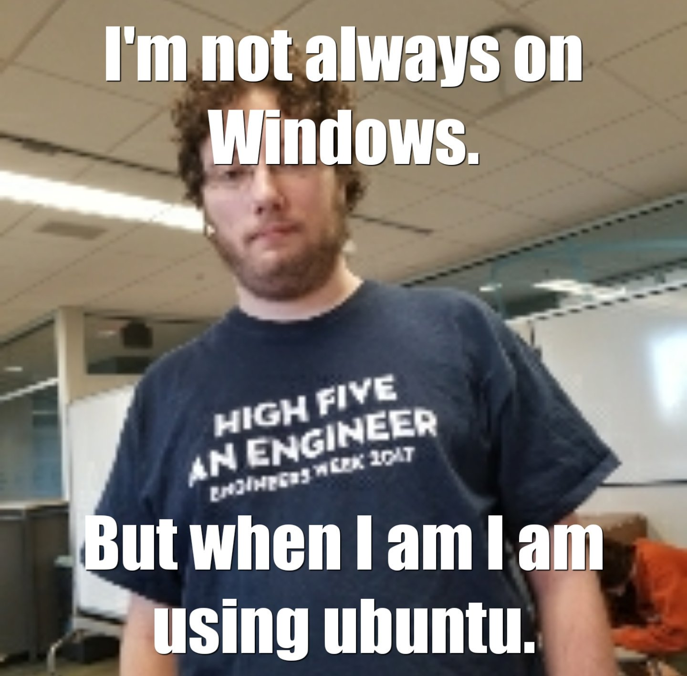

Prior to about a month ago, I had only ever attended one hackathon - my team came in second. I had to change that.
My first hackathon experience was the AT&T Hackathon called “Irish Hacks”, hosted at Innovation Park at the University of Notre Dame.
It was my freshman year, and really early on, too. Before the event officially started, people were asked to share ideas to aid in team creation.
Afterwards, I stood awkwardly by a group who looked like they had some good ideas. I stood there until they eventually asked me to join them.
The team was five guys total - another freshman, named Josh, along with three sophomores, named Ryan, Shaq, and Josh. To avoid
confusion, I will from now on refer to the freshman Josh as The English Major.
We continued brainstorming ideas, until The English Major suggested an idea for a game. A game where players walk around with their phones and battle monsters that are located in the real world. Players could level up by defeating monsters, and then submit their own monster into the game world. Players could also find armor and weapons in the real world. We went with his idea, came in second place, and won $2000 total. Not bad at all. The English Major would go on to become one of my best friends - by the way, he was a Civil Engineering major at the time, and was considering switching to Computer Science. We took Physics II together, and that was a disaster. I would see Shaq frequently until his graduation, when he went to work for Reddit. I think I had one class with Ryan, but other than that I never really saw him again.
Fast-forwarding a few years, some guy kept bugging me to do some Microsoft coding challenge with him. I refused, but then ran into him at the dining hall, and he mentioned the hackathon. I knew this was my last chance to redeem myself, and I figured we had some good odds, so I agreed. He had two friends who I take compilers with also already on board. Incidently, Josh, now a first year grad student, was also in compilers, and the day of the hackathon we were talking about our weekend plans, and I mentioned that I was doing the hackathon again. He wanted in, giving us a five man team once again.
And again we brainstormed ideas. My first instinct was an app to fast foward through those pesky commercials on TiVo using either OpenCV or perhaps a CNN. That idea didn’t get far. I then threw out my idea of a jacket that dynamically changes temperature. Not to the weather outside (though one of the others would later suggest we just do that), but rather to the temperature your character would be experiencing in a video game. Say you’re playing Minecraft - if you are near snow, you should feel cold in real life, and if you are in lava, you should be burning. It’s the future.
That idea went a lot farther - much farther than my suggestion of just building a death ray, but was ultimately rejected. I don’t quite remember how we got onto the topic of twitch, but that is where we ended up. We decided we would build an app that does a better job monitoring twitch chats - one that would rank users based off of how toxic they are in the chat so that human moderators can make the decision to ban them or not. After about 36 hours worth of hard work, we made jeffy.
Basically, it presents a web interface with a d3 visualization of all of the users in the chat. Each user is represented as a circle. The size of each circle is proportional to the number of messages they sent, and the color of the circle is tinted green if they are nice, white if they are neutral, and red if they are naughty. We should have named this “Santa’s List” or something. Next to this visualiztion is a ranking of all the users, starting with the most naughty, along with several of their nicest and meanest messages. By their name and every message we indicate a rating, and by their name we also show options to ban, timeout, or mod each user.

The graph visualization of the chat users. Clicking a name shows some of their messages as well as options for punishment or promotion.

The list of users, presented as a scrolled capture on a samsung phone.
Twitch has an irc gateway, which is how we get messages in. We then use the IBM Watson api (there was a prize for the best use of it) to do sentiment
analysis on the message. We then pass the vector of sentiments through a neural network which gives us a toxicity score. We combine this with Watson
personality analysis on all their messages as well as the toxicity of their past messages to get a toxicity score for the user as a whole. We use
cherrypy for the backend of a web interface, bootstrap for the frontend, and d3.js for a nice data visualization. The source is available in the
jeffy link above. It could use some cleaning up, but hey, it’s hackathon code.
Anyways, we ended up winning, which got us a trip to AT&T’s foundry in Plano, Texas. It was a fun trip - I took lots of pictures. I was surprised we won, since there were a lot of cool projects. I think my favorite was one of my friends’ - her group made an app to figure out what meme people look like and caption pictures of them appropriately. They got third, and then she stole a tray of bacon and then tried forcing me to take it after I got home. Anyways, I still have their app installed, because it gave me this gem:

I mean, it’s true…